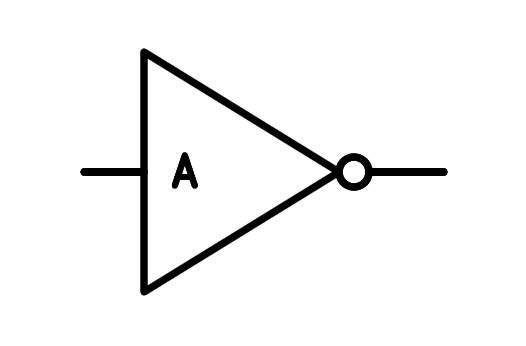
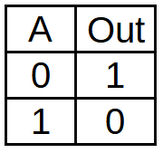

5. La porta lògica no¶
Els components més simples de l’electrònica digital són les portes ** lògiques **, que realitzen operacions lògiques bàsiques. Combinant aquestes portes lògiques, es poden crear circuits molt més complexos fins arribar als ordinadors moderns.
La porta lògica més senzilla és la porta ** de negació **, també anomenada ** porta inversora ** o ** no **. Aquesta porta inverteix el valor del senyal d’entrada, de manera que si l’entrada val la pena lògica, la sortida valdrà una lògica i viceversa.
El símbol de la porta ** no ** és el següent:
{kind=link}

Porta lògica no.¶
El cercle a la sortida del triangle és el que representa que la porta inverteix o nega el valor d’entrada.
La funció lògica de la porta no ** està representada per una línia de l'element per invertir o negar:
A continuació, podem veure la Taula de veritat del no puerta, que representa tots els valors possibles d'entrada i sortida de la porta lògica:
{kind=link}

Taula de veritat de la porta lògica no.¶
Quan l’entrada valgui zero, la sortida (fora) valdrà una.
Quan l’entrada valgui una, la sortida (fora) valdrà zero.
Simulació¶
En la simulació següent, podem veure una no Puerta amb una entrada que pot canviar el valor i una sortida que sempre val la pena el contrari del valor d’entrada.
Al simulador els valors es poden representar amb nombres (0, 1), amb nivells lògics (L, H) o amb valors de tensió (0V, 5V), amb la correspondència següent:
| Plana | Valor lògic | Valor de tensió |
|---|---|---|
| L = baix | 0 = Logical Zero | 0 volts |
| H = alt | 1 = lògic | 5 volts |
Heu de fer clic al valor d’entrada lògica per canviar el valor.
Exercicis¶
Què és una porta lògica?
Què es pot crear amb portes lògiques?
Expliqueu amb les vostres paraules el funcionament de la porta lògica no.
Dibuixa el símbol no de la porta i escriu sota la seva funció lògica i els seus tres noms diferents.
Dibuixa la taula de veritat de la no Puerta amb ** valors numèrics ** 0 i 1.
Dibuixa la taula de veritat de la no Puerta amb ** nivells lògics ** L i H.
Feu una simulació de dos dimarts en sèrie. Com creieu que serà la taula de veritat de les dues portes?
Realitzeu la simulació i dibuixeu la taula de veritat de les dues portes en sèrie.